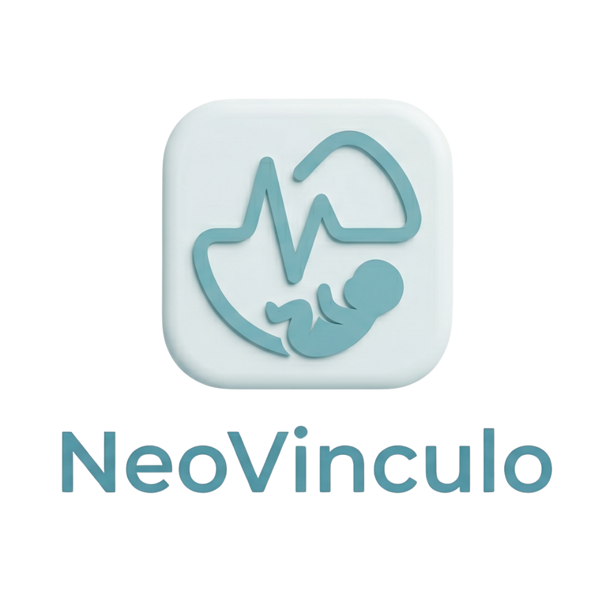

Destaque
IoT · Web · Mobile
NeoVínculo
Monitoramento infantil com IoT
- Problema
- Acompanhar indicadores como temperatura corporal e oxigenação de crianças exige a integração confiável entre sensores físicos e um sistema de software que centralize e disponibilize esses dados.
- Solução
- Um ESP32-C3 conectado aos sensores DS18B20 e MAX30102 coleta os dados e os envia para uma API. Um backend processa e armazena as informações, e um aplicativo mobile permite o acompanhamento em tempo real.
- Funcionalidades principais
- Coleta contínua de dados via sensores, comunicação em tempo real com Socket.IO, API REST para integração entre hardware e sistema, aplicativo mobile para acompanhamento e armazenamento em banco MySQL.
- Meu papel
- No projeto NeoVínculo, atuei como desenvolvedora responsável pela arquitetura do ecossistema de software de ponta a ponta, liderando a criação do backend RESTful, modelagem e persistência em banco NoSQL orientado a séries temporais, integração do firmware IoT aos servidores em nuvem e consumo de dados em tempo real nas aplicações Web e Mobile.
- ESP32-C3
- DS18B20
- MAX30102
- Node.js
- Express
- MySQL
- React Native
- Socket.IO
- API REST
- Azure
Fluxo simplificado
Sensores (DS18B20 / MAX30102)
ESP32-C3
API REST + Socket.IO
MySQL
App mobile (React Native)